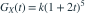

X、Y 独立，概率母函数为

、。 为？- A

- B
- C
- D
我已思考，展开答案与解析
正确答案：C
- 由 G(1)=1 得 k=1/243。X 为 Bin(5,2/3)，Y 为1+Bin(2,2/3)。方差相加为 。
易错提醒先明确分布参数、独立性和统计量的定义，再进行计算。
资料校订：原题未给 X、Y 独立；已补充，否则和的方差不能确定。数值选项改为精确分数。
用户提供练手卷 · 原第 44 题；题目 PDF 第 8 页
单选改编；题干与选项已重新编排

、。 为？资料校订：原题未给 X、Y 独立；已补充，否则和的方差不能确定。数值选项改为精确分数。
用户提供练手卷 · 原第 44 题；题目 PDF 第 8 页
单选改编；题干与选项已重新编排